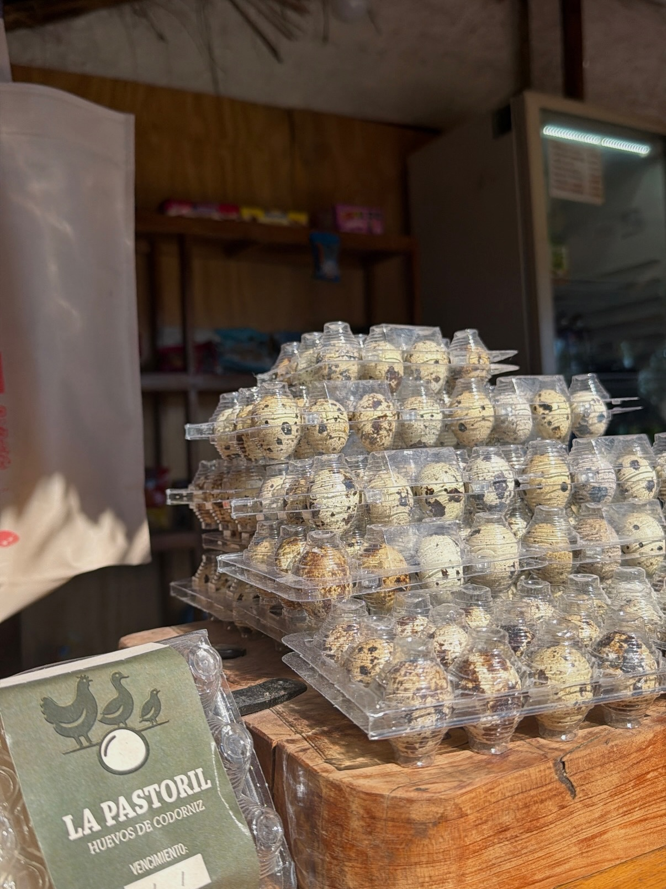
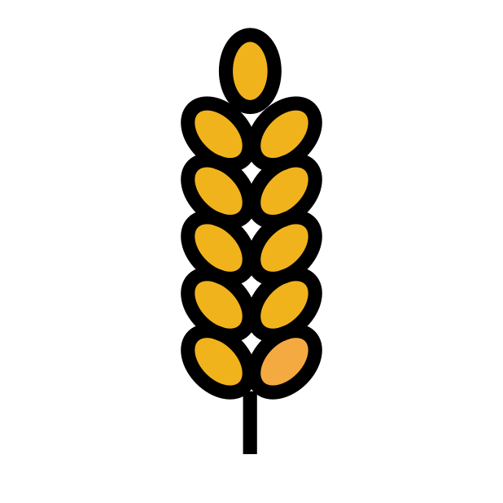
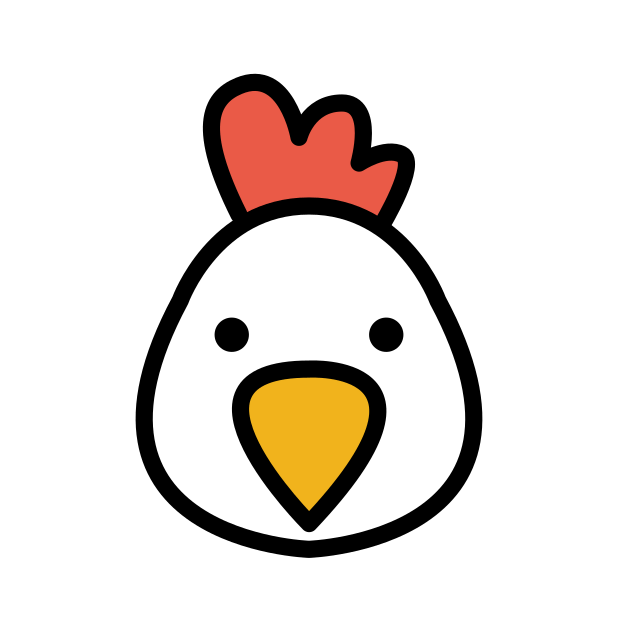
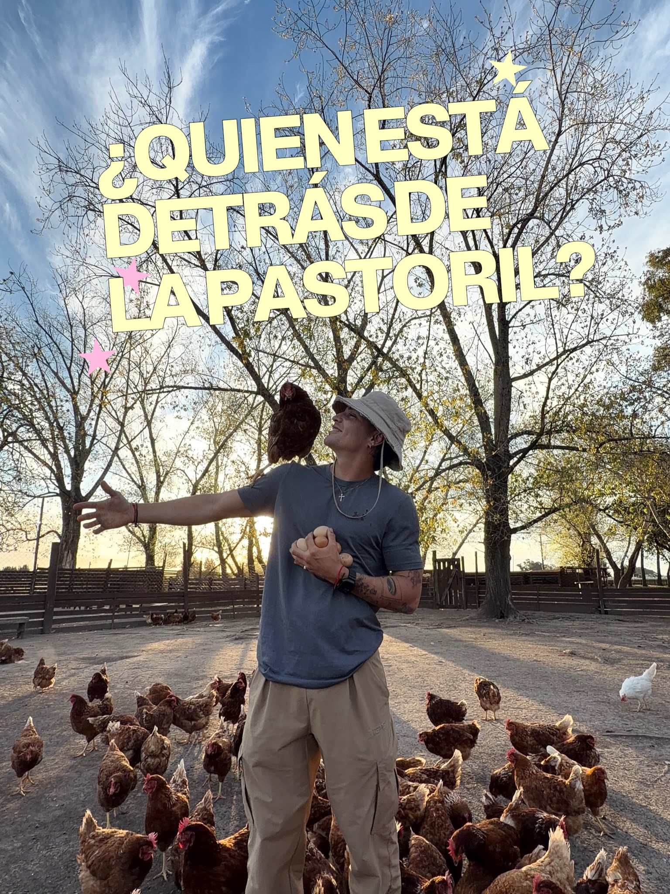
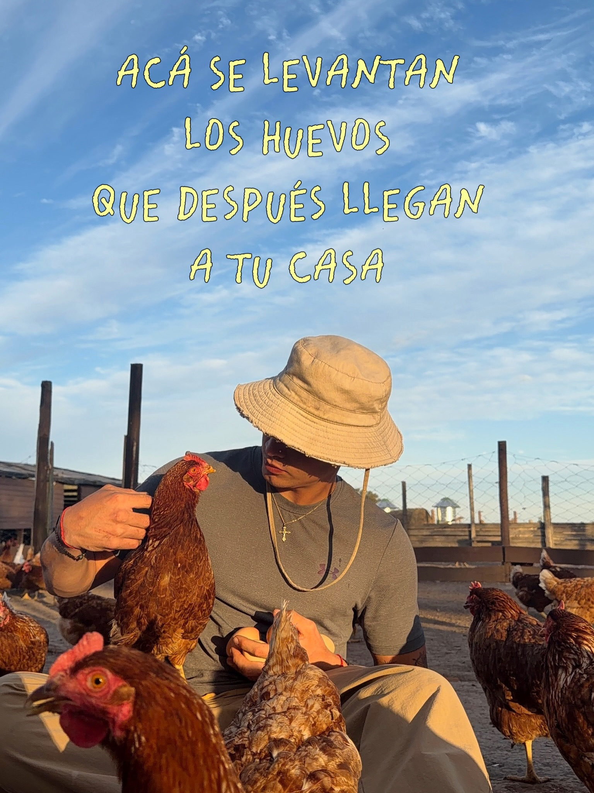
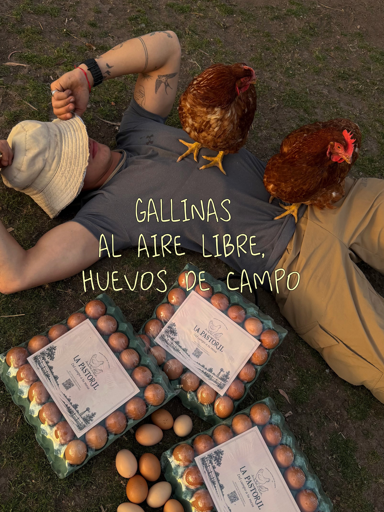
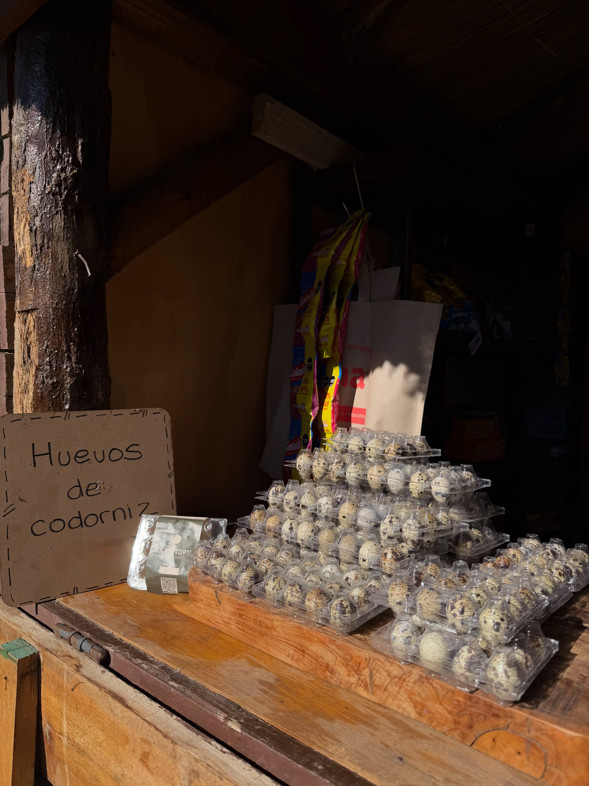
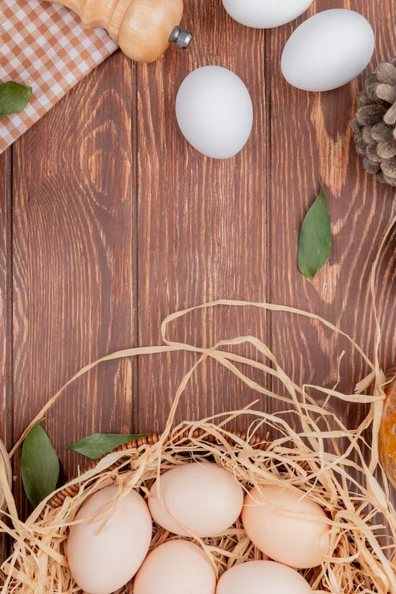
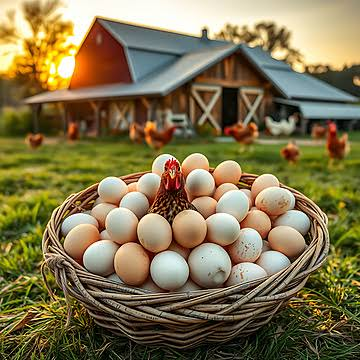

Huevos de campo, de verdad.
Huevos de campo, de verdad.
Buen día. Huevos recién puestos, del campo a tu mesa.
Campo abierto
Envíos a coordinar
+6.600 seguidores nos eligen
Gallinas a campo abierto · Zona Sur, Buenos Aires
01 — Comprar
Elegí lo que te gusta
FRESCOS 🥚 DE CAMPO 🥚 SIN JAULAS 🥚 CAMPO ABIERTO 🥚
02 — Bienestar
Gallinas felices = huevos distintos

Aire libre todo el día
Se mueven, descansan y comen en contacto con el sol y la tierra.

Alimentación natural
Balance sano con ración, forraje y atención constante del campo.
Sin jaulas
Espacio para correr, explorar y tomar el sol con tranquilidad.
Cuidado veterinario
Controlamos salud, limpieza y bienestar de cada ave.

Nombre propio
¡Sí, tienen nombre! Cada una forma parte de la historia del barrio.
Doña Clotilde
La jefa del gallinero. Siempre lidera la fila y vigila que todo esté bien.
Pepita
Siempre primera en llegar a la comida. No pierde ni una de las señales del campo.
Mora
Adicta a las lombrices y a dar vueltas alrededor del carrito del rastrojo.
0
gallinas al aire libre
0
horas de sol por día
0
huevos recolectados esta semana
03 — Nuestro campo
Un lugar donde la tierra habla.






Amanecer en el gallinero
Cuando se abre el día, las gallinas salen con calma, se estiran y empiezan a moverse con energía.
Recolección a mano
Cada huevo se selecciona con atención, con el cuidado de quien conoce cada nido.
Selección y limpieza
Se revisa tamaño, limpieza y frescura antes de pasar a la próxima etapa.
Packaging con etiqueta La Pastoril
Se embalan con una etiqueta artesanal, pensada para conservar lo mejor del campo.
Camino a tu mesa
De la granja a tu cocina, con la frescura que solo un huevo de campo tiene.
Codornices
Huevos de codorniz: chiquitos, manchados y poderosos.
Más intensos y sabrosos, perfectos para desayunos, ensaladas, picadas y platos con personalidad.

04 — Cuidados
Cómo disfrutar mejor cada huevo
No hace falta heladera si se consumen rápido: mejor guardarlos en un lugar fresco y seco, lejos de la humedad y del sol. Si los dejás en la heladera, usá el cajón de la puerta y mantené siempre la punta hacia abajo.
Tocá para ver la prueba
Toqueá el huevo para verlo hundirse o flotar. Cuanto más fresco, más pesado y más se hunde; si está más viejo, puede flotar con mayor facilidad.
Se cocinan más rápido que los de gallina. Unos 2 a 3 minutos para hervidos suaves y 4 a 5 minutos para una textura más firme. Son ideales en tostadas, picaditas y ensaladas.
Con buena conservación, los huevos de gallina suelen mantenerse muy bien durante varios días. Si son de campo y frescos, se disfrutan mejor en la primera semana para máxima intensidad de sabor.
Huevos revueltos con ciboulette, tostadas con queso crema y rúcula, tortilla de papa y perejil, o una fritura corta para acompañar pan casero y sal de campo.
¿Cuántos huevos necesito?
4 personas
4 días por semana
Te conviene un pack de 12 huevos por semana.
Punto de cocción
Un huevo de campo se disfruta con calma.
05 — Ubicación
Zona Sur, Buenos Aires
Zona de entrega
- Cobertura por zona: zona sur y alrededores
- Horarios: Lun–Sáb 9 a 19 hs
- Retiro por el campo con cita previa
- Envíos: día a coordinar
06 — Historia
De la granja al barrio
La Pastoril nació con la idea de llevar al barrio lo que a veces parece imposible: huevos frescos, con sabor, sin apuro y con la tranquilidad de saber de dónde vienen. Empezamos con unos pocos nidos, mucho cuidado y una promesa: cocinar con respeto por la tierra, por la gallina y por la mesa.
Hoy seguimos cuidando cada detalle: alimentación, movimiento, luz, recolección y distribución. Todo, para que cada huevo se sienta como un regalo del campo.
“Acá se levantan los huevos que después llegan a tu casa”Conocé más en Instagram
07 — Clientes
Qué dicen la gente que nos conoce
0+pedidos compartidos0 / 5puntaje de la comunidad
Contadores y reseñas ilustrativos: actualizar con métricas verificadas antes de publicar.
“La diferencia se nota al primer bocado: más sabor, más color y mucho más frescura. Los huevos de codorniz son un lujo.”
— Mica, Bernal“Pedimos para la familia y nos encantó la atención. Todo muy claro, muy amable y con buena onda.”
— Lorenzo, Quilmes“Los huevos de gallina tienen un sabor de campo en serio. Nos volvimos clientes fijos.”
— Celeste, Banfield“Llegaron impecables y súper frescos. Ya estamos pensando el próximo pedido.”
Opinión ilustrativa“Qué lindo recibir un pedacito del campo en casa 🌿”
Opinión ilustrativa“La atención fue muy amable y coordinar la entrega resultó facilísimo.”
Opinión ilustrativa“Los huevitos de codorniz son perfectos para compartir.”
Opinión ilustrativa“Todo llegó bien cuidado. Se nota el cariño en cada detalle.”
Opinión ilustrativaLas reseñas ilustrativas se reemplazarán por opiniones reales de clientes.
08 — Preguntas frecuentes
Preguntas frecuentes
Claro. Elegís lo que quieras y después armás el pedido en WhatsApp, listo y fácil.
Hacemos entregas en la zona sur de Buenos Aires y también podés retirar por el campo con cita previa.
Si querés más cantidad, podés consultar directamente por WhatsApp y te armamos una propuesta.
Sí. Se crían al aire libre, con control de salud y cuidados naturales del emprendimiento.
Coordinamos el medio de pago al confirmar tu pedido por WhatsApp.
Podés consultar el mínimo y las condiciones de entrega para tu barrio directamente por WhatsApp.
Nuestras gallinas tienen espacio al aire libre, se mueven y reciben atención diaria; eso forma parte del cuidado del campo.
El stock depende de la recolección. Escribinos por WhatsApp y te confirmamos lo disponible ese día.